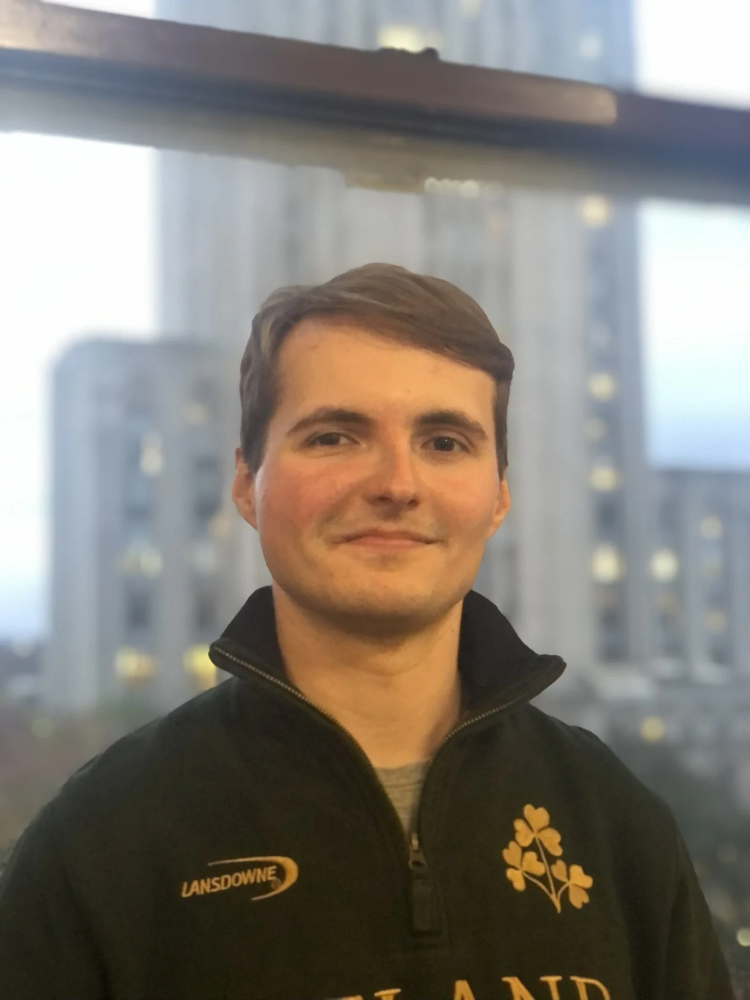

← All talksFourth TiE Pittsburgh Open Mic Night
Diverse Intelligence AI Training
A talk about the Fundamental Universal Learning Patterns (FULPs) Framework and how diverse forms of intelligence can inspire AI training.
If the embedded recording does not load, watch it on YouTube ↗.
About the talk
At the Fourth TiE Pittsburgh Open Mic Night, William shared his independent research on the Fundamental Universal Learning Patterns (FULPs) Framework.
The talk, “Diverse Intelligence AI Training,” presents the framework’s central idea: learning patterns across diverse forms of intelligence may offer useful inspiration for how AI systems are trained.
